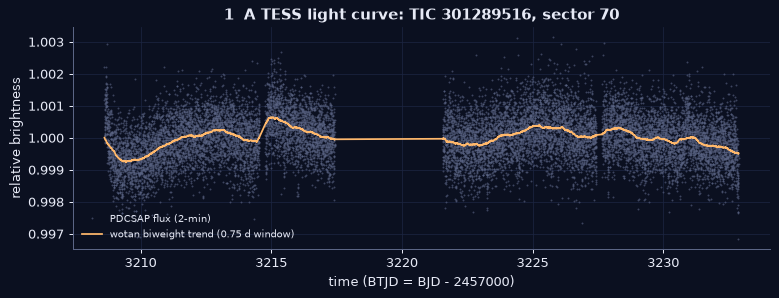
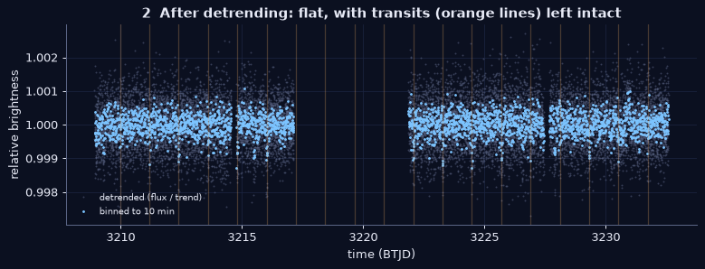
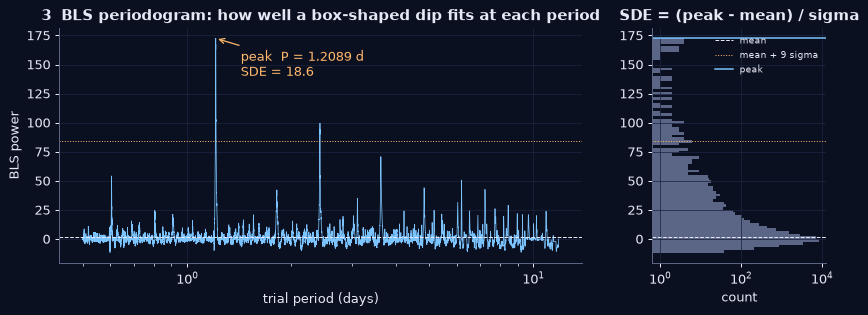
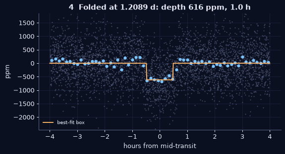
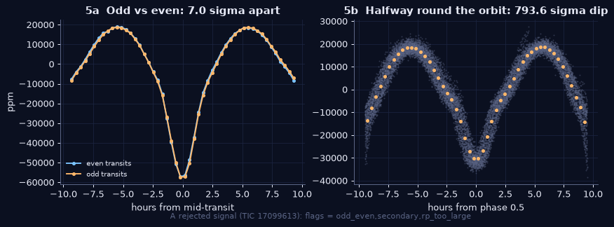
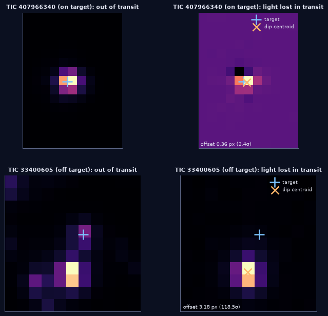
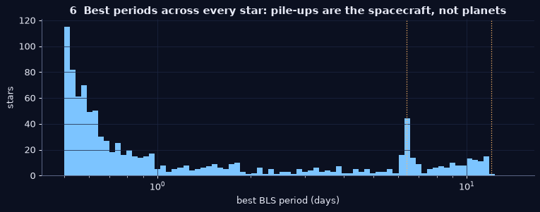
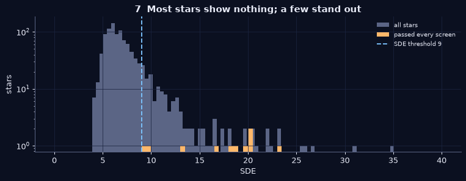

1 · TESS and light curves
NASA's Transiting Exoplanet Survey Satellite stares at one 24°×96° strip of sky for about 27 days (a sector), then moves on. For tens of thousands of pre-selected stars per sector it records brightness every 2 minutes. That series of brightness against time is a light curve. The mission's SPOC pipeline already removes many instrument effects (the PDCSAP flux we use) and flags bad cadences (cosmic rays, pointing glitches, momentum dumps), which we throw away.

Why it works: if a planet's orbit is edge-on from our point of view, once per orbit it blocks a tiny fraction of the star: (planet radius / star radius)². An Earth in front of the Sun dims it by ~84 parts per million; a Jupiter by ~1%.
2 · Detrending
Stars spot, pulsate and flicker, and the spacecraft drifts. Those slow wiggles can be thousands of ppm, far bigger
than a small planet. We fit a robust running average (a Tukey biweight in a 0.75-day window, using the
wotan package) and divide it out. The biweight ignores outliers, so a 2-hour transit barely pulls on the
trend and survives. We also cut 0.3 days at the edges of every data gap, where ramps are common, clip upward flares,
and bin to 10 minutes to speed up the search.

Trade-off: a window that's too short eats long transits; too long leaves stellar variability in. 0.75 d is about three times the longest transit we search for (6 h).
3 · Box Least Squares and what SDE means
A transit looks like a flat-bottomed box. BLS tries thousands of trial periods (0.5 days to half the sector), phases and durations (1–6 h). For each it asks: if I fold the light curve at this period, how much better does a box-shaped dip fit than a flat line? That improvement is the BLS power; plotted against period it's a periodogram.

SDE (Signal Detection Efficiency) answers "how unusual is the highest peak?": SDE = (peak − mean) / standard deviation
of the periodogram, after removing its slow slope. Pure noise usually gives SDE ≈ 5–8; we require SDE ≥ 9.

4 · Vetting: odd/even, secondary eclipse, shape and size
Most strong BLS signals are not planets. The most common impostor is an eclipsing binary: two stars orbiting each other. The automated screens we apply to every star:
- SNR ≥ 7: is the dip depth large compared to its uncertainty?
- ≥ 3 transits: two dips can be a coincidence or an artefact.
- Odd vs even depth: if the "planet" is really two unequal stars at twice the period, alternate dips differ.
- Secondary eclipse: a dip half an orbit later means the companion gives off light, so it's a star.
- Duration vs. star size: a transit can't last much longer than physics allows for that period and star.
- Depth < 5 % and radius < ~2 Jupiter radii: bigger is a star, not a planet.
- Variable star: brightening at phase 0.5 means a smooth wave, not a transit.

What we can't check automatically yet: whether the dip is on a neighbouring star whose light leaks into the same pixels (TESS pixels are 21″ wide). That needs pixel-level centroid analysis, and it's the first thing a human reviewer does.
4b · Deep vetting: blends and binaries
Signals that survive the per-star screens and match nothing known get slower, pixel-level checks.
- Difference image. From the 11×11-pixel stamp TESS stores around each star, we average the images taken just before and after each transit and subtract the images taken during it. What's left is a picture of where the light went missing. If that spot sits on a neighbouring pixel instead of on our star (measured to a fraction of a pixel, with a bootstrap over transits for the uncertainty), the dip belongs to someone else.
- Gaia neighbours. We list every Gaia DR3 star within two TESS pixels (42″). A neighbour N magnitudes fainter dims the total light by at most 10−N/2.5 even if it vanished completely, so only neighbours brighter than that limit can fake the depth. Ones closer than ~10″ are too close for the difference image to separate: those stay flagged as an unresolved neighbour.
- Known eclipsing binaries. We cross-match the TESS eclipsing-binary catalogue (Prša et al. 2022) by TIC number and by position, because a binary on the star next door with the same period is a classic blend, plus the Kepler EB catalogue where the fields overlap.
- Shape. A planet's transit has a flat bottom once the planet is fully in front of the star; two grazing stars give a V. We compare the depth in the central third with the outer two thirds (V-ratio; a box is 1, a V is about 0.4).
- A secondary anywhere. Eccentric binaries don't put the secondary eclipse at phase 0.5, so we scan every phase from 0.15 to 0.85.
- Size. Depth × the star's TIC radius gives the companion's radius. Above about 2 Jupiter radii it's a star, not a planet.

Still not proof: a clean result means "no evidence it's a blend or a binary at TESS resolution", not "it's a planet". Ground-based images and spectra are what settle it.
5 · Systematics: when the spacecraft fakes a planet
If many unrelated stars "find" the same period, the cause is the telescope, not the stars: scattered light every orbit, momentum dumps, the data-download gap. Our first run showed exactly this, so we now flag any period shared by an unusual number of stars in a sector.


6 · Cross-matching: is it already known?
Every survivor is compared, by TIC ID and period (allowing for half/double/third/triple-period aliases within 1 %), with:
- TOIs (TESS Objects of Interest), the mission's own candidate list on ExoFOP, with dispositions like PC (planet candidate), KP (known planet), CP (confirmed), FP (false positive);
- CTOIs, community candidates others have already submitted;
- confirmed planets in the NASA Exoplanet Archive.
Re-finding known TOIs is how we measure our own sensitivity (the dashboard's recovery rate). A signal on a TOI host at a different period is interesting: it could be a second planet. A survivor with no match is listed as needs review, never as a discovery.
7 · How citizen-science submission works
Look by eye
Open the diagnostic sheet. Check other TESS sectors for the same star, and the pixel data for a contaminating neighbour.Planet Hunters TESS
The Zooniverse project's Talk boards are where volunteers and the science team discuss TIC IDs. Community finds have become CTOIs and published planets this way.ExoFOP CTOI
With an ExoFOP account you can submit a Community TOI: period, epoch, depth, duration, notes. It's public, so only after multi-sector and pixel-level checks.Follow-up & publish
Observers may take spectra or ground-based photometry. A well-vetted candidate, or a methods note, can become a short refereed paper in Research Notes of the AAS.Status today: nothing submitted. Candidates move to "submitted" on the dashboard only after a human has done steps 1–3.
8 · Check yourself
Nine quick questions on everything above. Your answers stay in this browser only.